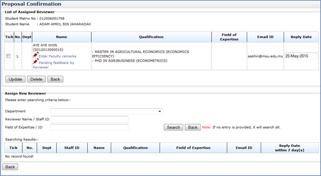
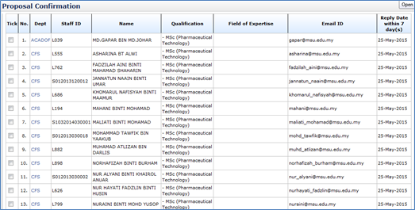
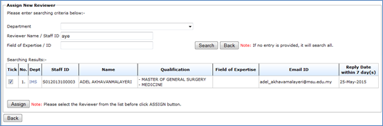
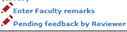
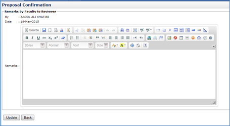

Figure 37: Proposal Confirmation – List of Assigned Reviewer
Steps:-
- To assign new Reviewer. Choose the department of the reviewer on Department, enter the Staff Name/Staff ID and Field of Expertise and then click the Search button to search.
- If there is no entry provided, the search will display all the staff.

Figure 38: Proposal Confirmation – List All Reviewers (If no search criteria is provided)

Figure 39: Proposal Confirmation – List of Reviewer (based on provided search criteria)
- Choose the staff that the user wants to assign by ticking the checkbox.
- By default, reply date will be set to 7 days starting the day that been assigned.
- After the entire step done, click Assign button.
- Then click Back button.
- Tick the Staff detail and click Delete button to remove the assigned supervisor/co-supervisor
- To enter remark of the staff click .
- To change the role, choose the Role listed.
- Then click Update button.
Enter Faculty Remark

Figure 40: Proposal Confirmation – Remarks by Faculty to Reviewer
Steps:-
- Insert necessary description into the Remarks and then click Update button
- Then click Back button.